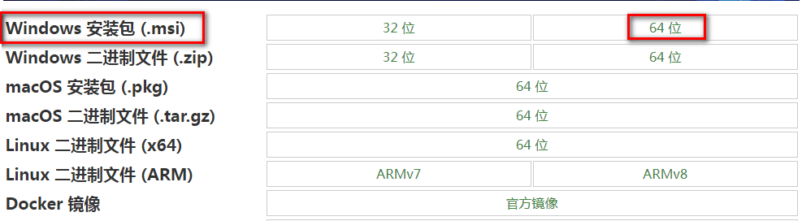
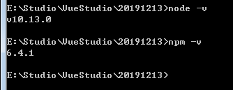
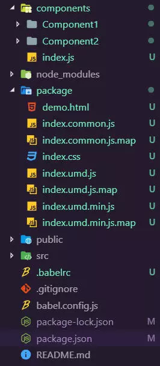
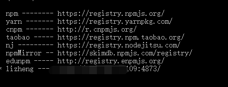

闲来无事，随便写写……
前言
在前端开发中可能会遇到将相同的功能模板集合成一个组件，供他人调用，这样可以减少重复造轮子，也可以节约人力、财力，更能够提高代码的可维护度；下面将通过详细的步骤教你如何构建一个 Vue 前端组件。。
1、在本机上安装好 NodeJs，并配置好环境变量
下载: Nodejs地址我这里是下载 64 位 Windows 安装包(.msi)，大家可以根据自己电脑系统选择相应的版本即可。

下载 NodeJs 后双击它，采用默认设置，一直点击下一步，直到 Finish 为止。需要说明的是，在安装 NodeJs 时，已经设置好了系统环境变量，此外 npm 工具也同时被安装好了，我们可以在 cmd 窗口中输入 node -v 命令和 npm -v 命令查看，若都安装成功了话，会看到如下的效果：

2、vue 项目安装(如已安装，可略过此步骤)
创建一个 Vue 项目(使用默认配置安装就 OK)
vue create ui-demo安装 babel-plugin-component
npm i babel-plugin-component -D
babel-plugin-component 就是 Element UI 用来实现组件按需加载的一个 babel 插件。我们把它用到我们的组件库上，就不需要重新造一个轮子出来了.
在项目的根目录下创建一个 .babelrc 的文件，配置可以参照下面的代码进行更改。
{ "plugins": [ [ "component", { "libraryName": "ui-demo", // 组件库的名字，需要和 package.json 里的 name 相同 "libDir": "components",// 存放组件的文件夹，如果不想配置此项，默认文件夹的名字为 lib } ] ] }创建一个存放组件的文件夹
既然我们刚刚已经配置了存放组件的文件夹，下一步肯定就是创建这么一个文件夹了。由于我配置了的文件夹名为 components，所以我们的文件夹名字就是 components。
- 上面的操作完成后，我们的项目目录就基本搭建好了，如下：
- 写组件终于到了写组件的时候了，在
components文件夹下新建一个Component1的文件夹来存放我们的第一个组件。 Component1文件夹里有一个Component1.vue的文件和一个index.js文件。目录如下：
Component1 -> Component1.vue 代码:
Component1 -> index.js代码：<template> <h1 class="component1">component1</h1> </template> <script> export default { name: 'Component1' } </script> <style> .component1 { color: green; } </style>
import Component1 from './Component1.vue';
Component1.install = function(Vue) {
Vue.component(Component1.name, Component1);
}
export
default Component1;index.js 中的主要功能就是以插件的形式注册一个全局组件，不懂的小伙伴可以照猫画虎，微调一下就好了。
第二个组件代码就不发出来了，复制一份，给个 css 样式就好了。
在 components 文件夹根目录下创建一个 index.js 用来整合所有组件。
components -> index.js 代码：
import Compontent1 from './Component1/index'
import Compontent2 from './Component2/index'
const components = [Compontent1, Compontent2, ]
function install(Vue) {
components.map = (component = >{
Vue.component(component.name, component)
})
}
if (typeof window !== 'undefined' && window.Vue) {
install(window.Vue);
}
export
default {
install,
Compontent1,
Compontent2,
}稍微提醒，需要把 install 也一起导出，观察不细心的可能会不注意就写漏了。
3、修改或添加 package.json 中的配置
script中添加一条命令："lib": "vue-cli-service build --target lib --name index --dest package components/index.js"
最后面的 components/index.js 是我们存放组件文件夹根目录的index.js 文件，记得根据你的情况修改。这个命令执行后，会打包生成一个 package 的文件夹。
添加 files 白名单，打包上传哪些文件到 npm 上：
"files": [
"components",
"package"
]添加 style，设置样式路径：
"style": "package/index.css"路径就是我们打包出来的 package 中的 index.css 文件。
- 添加 main，设置入口：
"main": "components/index.js"
路径是存放组件的 components 文件夹下的 index.js 文件。
将 private 设置为 false：
"private": false设置此项目不是私有项目之后，才能发布好 npm 上。
下面的是完整的 package.json 文件配置：
{
"name": "ui-demo",
"version": "0.1.0",
"private": false,
"main": "components/index.js",
"style": "package/index.css",
"files": ["components", "package"],
"scripts": {
"serve": "vue-cli-service serve",
"build": "vue-cli-service build",
"lint": "vue-cli-service lint",
"lib": "vue-cli-service build --target lib --name index --dest package components/index.js"
},
"dependencies": {
"core-js": "^2.6.5",
"vue": "^2.6.10"
},
"devDependencies": {
"@vue/cli-plugin-babel": "^3.7.0",
"@vue/cli-plugin-eslint": "^3.7.0",
"@vue/cli-service": "^3.7.0",
"babel-eslint": "^10.0.1",
"babel-plugin-component": "^1.1.1",
"eslint": "^5.16.0",
"eslint-plugin-vue": "^5.0.0",
"vue-template-compiler": "^2.5.21"
},
"eslintConfig": {
"root": true,
"env": {
"node": true
},
"extends": ["plugin:vue/essential", "eslint:recommended"],
"rules": {},
"parserOptions": {
"parser": "babel-eslint"
}
},
"postcss": {
"plugins": {
"autoprefixer": {}
}
},
"browserslist": ["> 1%", "last 2 versions"]
}4、打包我们的代码
在控制台执行 npm run lib 进行文件打包，打包完成后会多一个 package 文件夹。文件目录就变成如下的了：

5、发布 npm(公库)
// 这是登录，前提是你已经在 npm 注册了账号
npm login
// 发布到 npm
npm publish
// 安装库
npm i ui-demo6、发布 npm(私库)
首先需要在服务器上搭建一个私库,这里推荐一个:npm私服搭建—verdaccio方案及其最佳实践
建立好私库后,登录、打包跟上面步骤一样,发布时需要使用nrm命令 nrm use xxx(切换到私库地址),如图所示:

// 发布
npm publish
// npm 安装
npm i ui-demo --registry 私库地址结尾
这样我们就可以使用我们自己的 UI 库了。